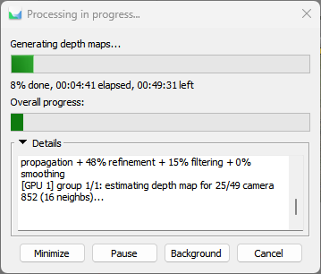
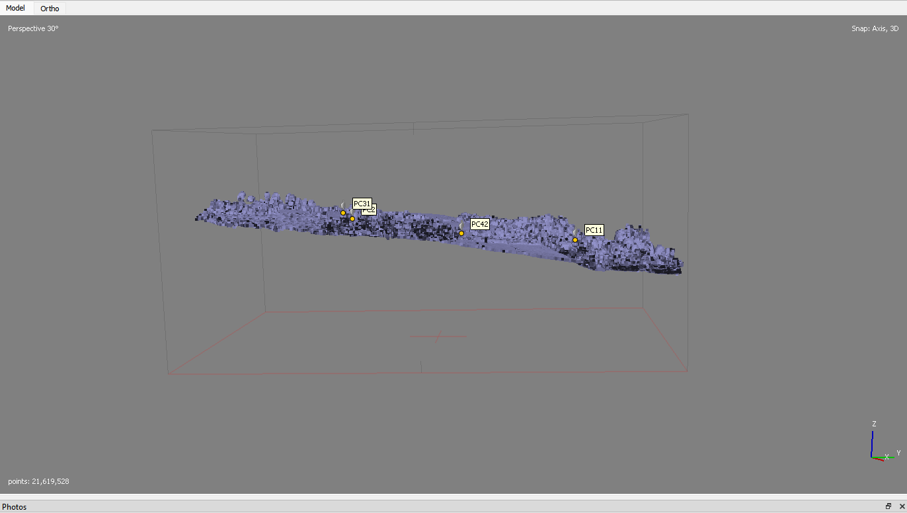

Qué se realizó en esta etapa
A partir del bloque optimizado se generaron mapas de profundidad y una nube densa en calidad Medium con filtrado Mild. El proceso produjo más de 21.6 millones de puntos; posteriormente se realizó una revisión tridimensional y solo se eliminaron manualmente cerca de 50 outliers evidentes por encima o por debajo de la superficie.
21,619,528puntos
Mediumcalidad
Mildfiltrado

Generación de mapas de profundidad con GPU.

Inspección lateral de la nube.
Se eliminaron manualmente cerca de 50 outliers aislados. No fue necesario aplicar una limpieza automática agresiva.